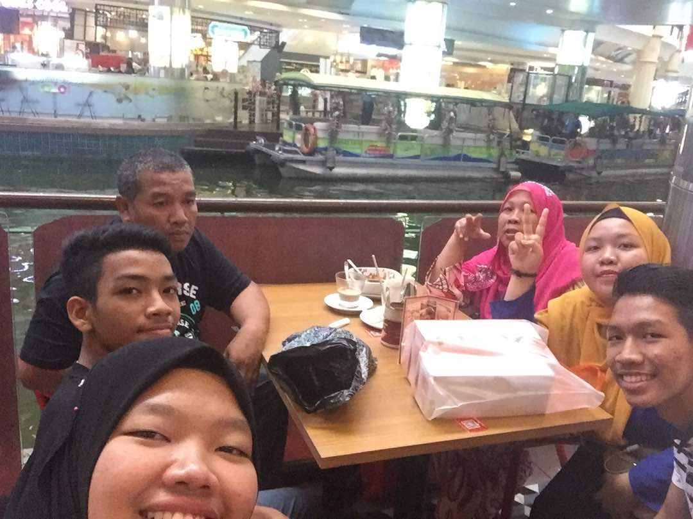

Hi everyone, welcome to my page. My name is Nur izzati adilah binti zaidi and I'm 23 years old. I am curently studying in Universiti Teknologi Mara,Kota Bharu Kelantan in Bachelor of Business Administration( Hons) Islamic Banking and now in second year.
This is my family. I am the oldest sister among my siblings. My father name is Zaidi bin Mohd and my mother name is Norzila binti Ali. I have four siblings which is 1 sister and 2 brother. The second one is Nur syafiqah adilah binti zaidi , followed by Khairul Imran bin Zaidi and the youngest one is Muhammad Khairul Ikmal bin Zaidi.
I am type of person that always put my family first and always share my story and moments together with my family.I believe that everything that we are doing right now and our sucessful are from family. The prayer, especially from our mom is the best key and one of a factor to sucess. They are like a vitamin to myself. Eventhough, sometimes I feel down over something, I will reflect back all of my journey and also think that my family never give up support me and give me stregth during my up and downs. So that they reason why i prefer to spend more time with my family because they are my backbones and everythings.
I love to sing especially during a free time.In addition, my family also share the same interest , so that during weekend we will cover a song together especially with my brother.
I am a person who will always give the best in everything I do from the basic until the end.I will give a full commitment in everything I do and i always put an effort in everything eventhough a small things. For me, if you want something in your life you need to hardwork to achieve something in your life. After that, never give up in everthing you do always give the best in your life. Fighthing, because the things that you sacrife today is the investment for your future .
BEFORE END OF MY PAGE THIS IS SOME QUOTES FOR YOU IF YOU ARE HAVING A BAD DAYS AND KEEP GOING ON BUDDIES, life is too short to be sad
THANK YOU FOR VISIT MY PAGE .